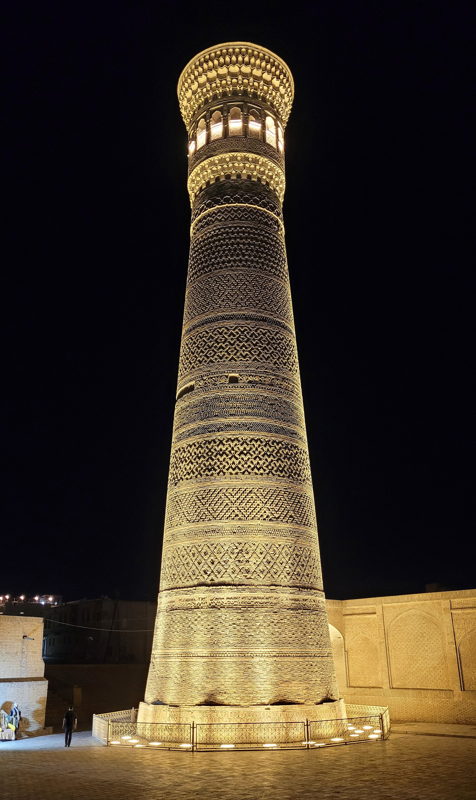

How Waqf (an Islamic Endowment) Works: An Explainer
A waqf is a way of dedicating property permanently to a charitable or public purpose: the underlying asset is preserved while the income it generates flows continuously to a good cause. Here is how it is set up, its main types, its historical role, and why it matters for Uzbekistan.

Waqf (Arabic "waqf" — "to stop", "to hold") is the permanent dedication of property to a charitable or public purpose. The essence is this: the asset itself (land, a building, or money) is held inalienable — it cannot be sold, gifted, or inherited — and only the income or usufruct it generates is used for the stated good purpose. For this reason a waqf is often called a "perpetual charity" (Source: Wikipedia, "Waqf"; Encyclopedia.com — Waqf).
How a waqf is set up: the key parties
A classic waqf has four core elements: the waqif — the founder who dedicates the property; the mawquf — the asset being dedicated; the mawquf alayh — the beneficiary of the income (a mosque, a madrasa, the poor, or the founder's descendants); and the mutawalli (or nazir) — the trustee who administers it. All of this is recorded in a deed called the waqfiyya. A waqf rests on three principles: perpetuity (it is meant to last forever), irrevocability (once declared it cannot be undone), and inalienability (the core asset is never sold or inherited) (Source: Wikipedia, "Waqf"; Encyclopedia.com).
The main types of waqf
Waqf comes in several forms. Waqf khayri (charitable) directs its income straight to public needs — mosques, schools, relief for the poor. Waqf ahli (family or dhurri) serves the founder's descendants first, and when the line ends the income passes to charity. Waqf mushtarak is a mixed form in which the income is split between family and charity. A distinct form is the cash waqf, in which money, rather than land or a building, is endowed and invested in a Shariah-compliant way, with the returns funding public services (Source: Finterra — Types of Waqf; LearningToGive — Muslim Philanthropy).

The cash waqf became an official practice in the Ottoman Empire: in 1548 a fatwa by Shaykh al-Islam Ebussuud Efendi endorsed endowments made in money. In the modern era waqf has expanded again — cash waqf, share waqf, corporate waqf, and even digital waqf platforms have emerged, letting small contributions be pooled into large endowments (Source: IEFpedia — Waqfs in the Ottoman Empire; Securities Commission Malaysia — Waqf Assets).
The historical role of waqf
For centuries across the Islamic world, waqf financed mosques, madrasas, caravanserais, hospitals, libraries, bridges, water systems, and public bathhouses. Hospitals, for example, covered staff salaries, medicine, and equipment out of endowment income. Waqf was so widespread that by the early nineteenth century a large share of the arable land in the Ottoman Empire was registered as waqf property (Source: Wikipedia, "Waqf"; Osmanlı Tarihi — Ottoman Waqf System).
In Central Asia too, waqf was a pillar of learning and faith. Mirza Ulugh Beg endowed his madrasas — in Bukhara (1417), in Samarkand on the Registan (1417–1420), and in Gijduvan (1433) — with waqf property; the Samarkand madrasa's library had its own endowment of land and shops. The later madrasas of the Registan ensemble — Sher-Dor (1619–1636) and Tilya-Kori (1646–1660) — and the Mir-i-Arab Madrasa in Bukhara (built in 1535 by Ubaydullah Khan) likewise operated through the waqf system. Mir-i-Arab is the only madrasa in Central Asia to have remained in continuous use (Source: Harvard DASH — Registan Madrasas; Wikipedia — Po-i-Kalyan, Tilya Kori Madrasa).
Waqf, zakat, and sadaqa — what is the difference
These three should not be confused. Zakat is one of the Five Pillars of Islam and is obligatory: typically 2.5% of qualifying wealth held for a lunar year, given only to the categories of recipients specified in Islamic law. Sadaqa is voluntary charity — given at any time, in any amount, to anyone. Waqf is voluntary but perpetual: the core property is preserved while its income serves the community without interruption. For this reason waqf is a form of sadaqa jariya (ongoing charity) — a deed whose reward continues even after the giver has died (Source: Musaffa Academy — Zakat and Waqf; Islamic Relief — Zakat vs Sadaqah).
Waqf in Uzbekistan: history and today
In Central Asia the waqf system was dismantled under Soviet rule. In the 1920s religious endowments were taken over by the state: agricultural waqf was folded into the state land fund, madrasas were closed by 1927, and in 1928 waqf was effectively abolished. The financial foundation that had sustained education and charity for centuries was thereby lost (Source: SWP Berlin — Religion in Uzbekistan; academic source — Waqf in Turkestan 1917–1924).
After independence the religious heritage gradually revived, but a full legal basis for waqf still does not exist. In recent years the effort has intensified: the UN Development Programme (UNDP), together with Uzbekistan's Committee on Religious Affairs and the Islamic Development Bank (IsDB), is running a programme to build the legislative and institutional framework for a waqf system, drawing in the Ministry of Economy and Finance, the Ministry of Justice, the Central Bank, and the Muslim Board of Uzbekistan. It is a step toward bringing waqf back — alongside zakat and sadaqa — in a modern, transparent form (Source: UNDP Uzbekistan; IsDB Institute — Uzbekistan Waqf Ecosystem; UzDaily).

Sources
- Wikipedia — Waqf
- Encyclopedia.com — Waqf
- LearningToGive — Muslim Philanthropy (Waqf)
- Harvard DASH — Registan: Madrasa-Anchored Urban Squares (15th–17th c.)
- Wikipedia — Po-i-Kalyan (Mir-i-Arab Madrasa)
- Islamic Relief — Difference between Zakat and Sadaqah
- SWP Berlin — Religion in Uzbekistan (2023)
- UNDP Uzbekistan — UNDP and IsDB support an enabling environment for Islamic finance
- IsDB Institute — Uzbekistan Waqf Ecosystem